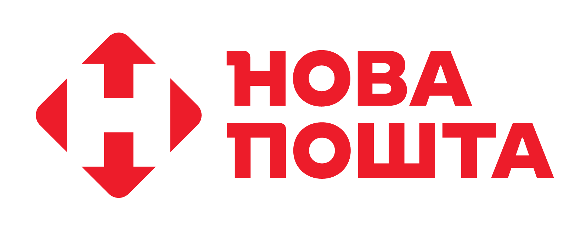

Доставка посилок – можеш відправляти і отримувати посилки по Україні та за кордон.
Швидка доставка – доставлять твою посилку дуже швидко, іноді навіть за 1 день.
Післяплата – оплачуєш товар при отриманні, якщо хочеш не платити онлайн.
Міжнародна доставка – можеш відправити посилку за кордон або отримати з-за кордону.
Грошові перекази – можеш переказувати гроші по Україні або за кордон.
Пакування – тобі допоможуть упакувати посилку, щоб все було в безпеці.
Послуги для бізнесу – якщо ти бізнесмен, можна організувати спеціальну доставку для твоїх товарів.
Самовивіз – можеш сам забрати свою посилку з відділення, коли зручно.
Термінова доставка по місту – якщо тобі потрібно, щоб посилка приїхала в день відправки.
Доставка кур'єром додому – кур'єр привезе посилку прямо до твоїх дверей.